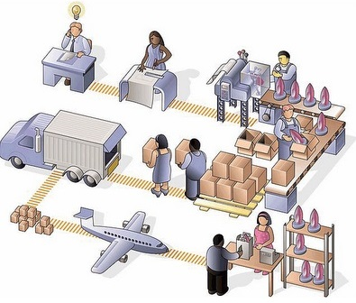
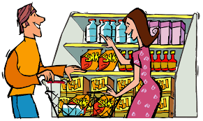

La economía social o economía social y solidaria se define como un modo de hacer economía, organizando de manera asociada y cooperativa la producción, distribución, circulación y consumo de bienes y servicios.
En economía, los bienes y servicios son el resultado de los esfuerzos humanos para satisfacer las necesidades y deseos de las personas. La producción económica se divide en bienes físicos y servicios intangibles. Los bienes son objetos que pueden ser vistos y tocados, tales como libros, plumas, sal, zapatos, sombreros, y carpetas. Los servicios son realizados por otras personas, tales como doctores, jardineros, dentistas, peluqueros o camareros. Se asume que el consumo de bienes y servicios provee de utilidad (satisfacción) al consumidor.

Son todos aquellos bienes físicamente apreciables, es decir, que se pueden tocar y ocupan un espacio, todo lo tangible.

los servicios son intangibles, es decir, no se pueden tocar, llevar, no tienen sabor ni olor alguno. Esta es la característica que más define un servicio y que lo diferencia principalmente de un producto.

Desde el punto de vista de la economía, la producción es la actividad que aporta valor agregado por creación y suministro de bienes y servicios, es decir, consiste en la creación de productos o servicios y, al mismo tiempo, la creación de valor. También por producción, en un sentido amplio, entendemos el incorporar utilidades nuevas a las cosas, no solamente la generación de producto con cualidades distintas a su origen, es decir, modificaciones a su estructura natural del factor que le otorga un nuevo uso. Es la actividad que se desarrolla dentro de un sistema económico. Más específicamente, se trata de la capacidad que tiene un factor productivo para crear determinados bienes en un periodo determinado. El concepto de producción parte de la conversión o transformación de uno o más bienes en otros diferentes. Se considera que dos bienes son diferentes entre sí cuando no son completamente intercambiables por todos los consumidores.
La distribución, en el ámbito empresarial, es aquel conjunto de actividades que se realizan para poner un producto o servicio a disposición de los consumidores que quieren comprarlo. Esto lo puede hacer el fabricante o proveedor de manera directa, o bien usando canales indirectos a través de distribuidores o intermediarios. La distribución comercial es uno de los cuatro elementos de la mezcla de márketing, y es responsable de que aumente el valor tiempo y el valor lugar de un bien. Por ejemplo, una bebida refrescante tiene un valor por su marca, imagen, etc., y la distribución comercial aumenta el valor tiempo y valor lugar poniéndola a disposición del cliente en el momento y lugar en que la necesita o desea comprarla.
Consumo es la acción y efecto de consumir o gastar, sean productos, bienes o servicios, como por ejemplo la energía, entendiendo por consumir, como el hecho de utilizar estos productos y servicios para satisfacer necesidades primarias y secundarias.
